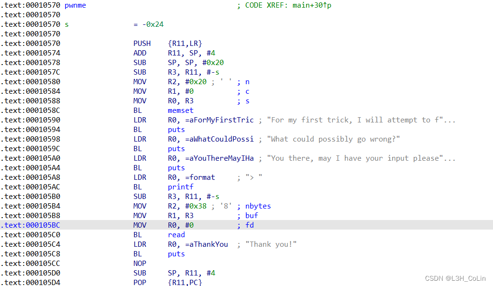
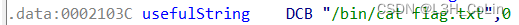
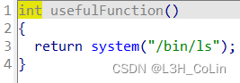
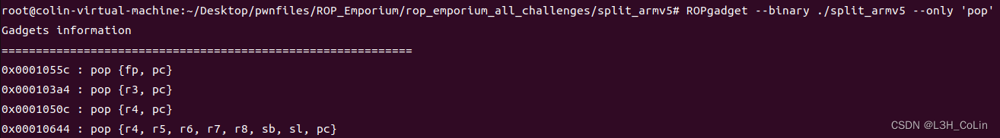

由于网上的ARM pwn题很少很难找，因此这里拿ROP Emporium的8道题做练习，这个网站有包含x86-64、x86-32、MIPS、ARM共4种架构的elf文件可以做。
A. ret2win
注意：在执行需要动态链接库加载的ARM elf文件时，如果直接使用qemu-arm xxx有可能会报错：/lib/ld-linux.so.3: No such file or directory。解决方法：安装arm交叉编译包apt install gcc-arm-linux-gnueabi，找到交叉编译包的lib地址（一般都是/usr/arm-linux-gnueabi），在命令后添加-L /usr/arm-linux-gnueabi即可。

这是一道最为简单的栈溢出，ret2text。为了熟悉ARM指令，我们从汇编层面进行分析。
可以看到，在ARM的函数调用规则中，参数的赋值顺序是从右到左，如下方BL指令调用read函数前，首先将第3个参数nbytes赋值给R2寄存器。在pwnme函数开头有一个PUSH指令，这里的R11可以看做是rbp，LR是函数返回值，在函数开头这两个寄存器基本都是要入栈的。然后保存R11的值作为栈帧的标记，SP下移留出栈空间。这就是函数开头需要完成的工作，与x86-64架构如出一辙。
下面看到read函数的调用部分。第二个参数R1的值为R11-0x24，由于R11在往上就是返回地址，因此要修改返回地址，应该先写入0x24长度的无效字节，然后写后门函数的返回地址。
最后看一下函数即将返回之前需要完成的工作。首先恢复SP为R11-4，然后R11出栈，PC出栈。在正常情况下，这里的R11出栈后应该指向父函数的栈空间顶端。现在我们进行了栈溢出，修改了这里的值，R11就无效了。
1 | from pwn import * |
B. split


这里有一个有用的字符串和一个后门函数，只不过这个后门函数不能让我们拿到shell，很自然的想法就是调用system函数，参数改成那个字符串的地址。
由于该elf文件的加载地址固定，我们就直接在elf文件中寻找可用的gadget。

不同于x86-64架构，ARM架构下的gadget似乎要更少一些。如上图所示，只用pop指令的gadget中没有能够pop r0的，我们只能扩大范围进行查找：

于是我们找到了这个gadget，它可以和上面的pop {r3, pc}连接起来，首先修改r3的值，再修改r0的值即可。于是我们的exp呼之欲出：
1 | from pwn import * |
PS：本来想发三道题的，但是这周末比赛打的太累了，第三题就留到后面一篇文章发了，还请谅解。